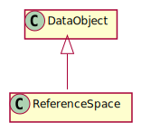

Class DataObject
Hierarchy-Diagram
{kind=link}
Legend
 class
class
Hierarchy
- DataObject
Index
Constructors
Properties
Accessors
Methods
Constructors
constructor
- new
Data Object(uid?: string, displayName?: string): DataObject -
Create a new data object
Parameters
-
uid: string = ...
Optional unique identifier
-
OptionaldisplayName: stringOptional display name
Returns DataObject
-
Properties
created
Created timestamp
display
Object display name
parentUID
uid
Object identifier
Returns
Unique object identifier
Accessors
position
- get position(): AbsolutePosition
-
Get the current absolute position of the object relative to the global reference space
Returns
Absolute position of data object
Returns AbsolutePosition
- set position(position: AbsolutePosition): void
-
Set the current absolute position of the object relative to the global reference space
Parameters
-
position: AbsolutePosition
Returns void
-
relative
- get relativePositions(): RelativePosition<any, Unit>[]
-
Get relative positions
Returns
Array of relative positions
Returns RelativePosition<any, Unit>[]
- set relativePositions(relativePostions: RelativePosition<any, Unit>[]): void
-
Parameters
-
relativePostions: RelativePosition<any, Unit>[]
Returns void
-
Methods
add
- add
Relative Position(relativePosition: RelativePosition<any, Unit>): DataObject -
Add a relative position to this data object
Returns
Data object instance
Parameters
-
relativePosition: RelativePosition<any, Unit>
Relative position to add
Returns DataObject
-
bind
- bind(service: DataService<string, DataObject>): DataObjectBinding<DataObject>
-
Bind the data object to a service
Returns
Data object binding with a service
Parameters
-
service: DataService<string, DataObject>
Service to bind it to
Returns DataObjectBinding<DataObject>
-
clone
- clone(): DataObject
-
Clone the data object
Returns
Cloned data object
Returns DataObject
get
- get
Position(referenceSpace?: TransformationSpace): AbsolutePosition -
Get the current absolute position of the object
Returns
Position of the data object
Parameters
-
OptionalreferenceSpace: TransformationSpaceReference space to transform it to
Returns AbsolutePosition
-
get
- get
Relative Position(referenceObjectUID: string, type?: string): RelativePosition<any, Unit> -
Get relative position of a specified object
Returns
Relative position to reference object
Parameters
-
referenceObjectUID: string
Reference object identifier
-
Optionaltype: stringConstructor type of the relative position
Returns RelativePosition<any, Unit>
-
get
- get
Relative Positions(referenceObjectUID?: string): RelativePosition<any, Unit>[] -
Get relative positions for a different target
Returns
Array of relative positions for the reference object
Parameters
-
OptionalreferenceObjectUID: stringReference object identifier
Returns RelativePosition<any, Unit>[]
-
has
remove
set
- set
Parent(object: string | DataObject): DataObject -
Set a parent object to the data object
Returns
instance
Parameters
-
object: string | DataObject
Data object or UID to add as parent
Returns DataObject
-
set
- set
Position(position: AbsolutePosition, referenceSpace?: TransformationSpace): DataObject -
Set the current absolute position of the object
Returns
Data object instance
Parameters
-
position: AbsolutePosition
Position to set
-
OptionalreferenceSpace: TransformationSpaceReference space
Returns DataObject
-
setUID
- setUID(uid: string): DataObject
-
Set the unique identifier of this object
Returns
Data object instance
Parameters
-
uid: string
Unique Identifier
Returns DataObject
-
A data object is an instance that can be anything ranging from a person or asset to a more abstract object such as a Wi-Fi access point or ReferenceSpace.
Usage
Creation
Objects can be created with an optional uid and display name.
Service binding
Data objects can be bounded to a service. Persistence is handled in DataObjectServices that store and load data objects.